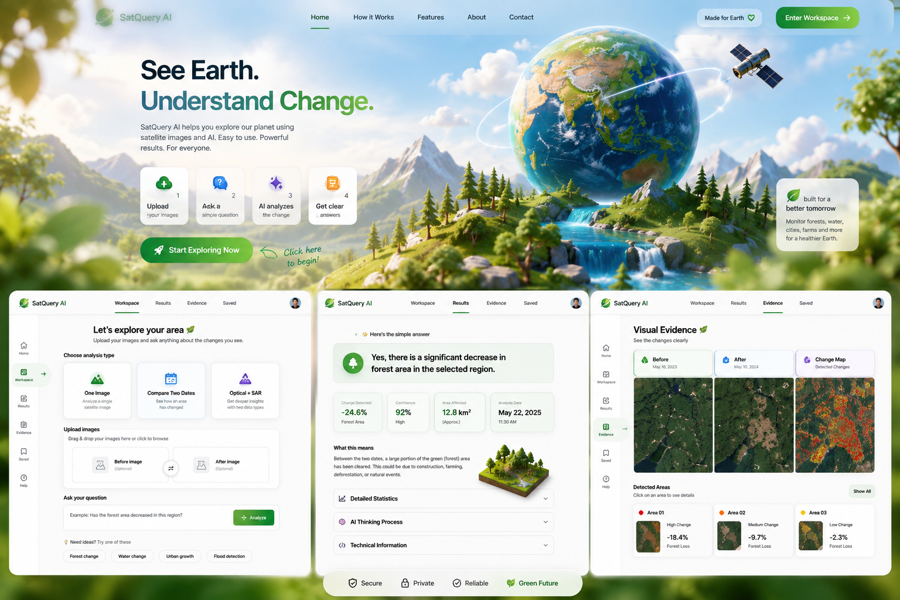

HOW IT WORKS
Simple enough for anyone.
You do not need to know GIS, coding, or satellite science.
⬆
Upload your images
Choose one image, two dates, or an Optical + SAR pair.
?
Ask in normal words
Example: “Has the forest area decreased in this region?”
✦
SatQuery analyzes
The demo picks the right analysis flow and prepares a result.
✓
See a clear answer
Read the simple result first, then inspect evidence if you want.
WHAT YOU CAN DO
One interface, several remote-sensing tasks.
Understand one scene and ask a question about it.
See what changed between an earlier and later image.
Combine two sensor types for a richer interpretation.
Inspect highlighted regions instead of trusting text alone.
SECURELocal frontend demo
SIMPLEPlain-language workflow
RELIABLEEvidence-first results
GREEN FUTUREEarth observation for better decisions